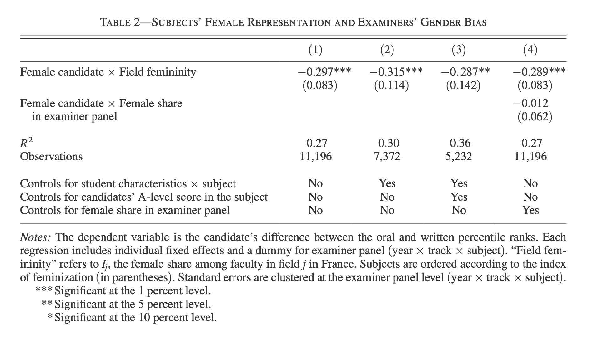

赞这条对录取比例更详细的研究。断章取义只是为得出有利于自己的结论，这种事情别做。干多了的话，以后即使有理有据地说话，别人也不会相信。
@yiqin_fu:
网上热传“巴黎高师取消口试后录取女性比例大增”。但现在看来，是原文作者挑了两个误导人的数据分享。原作者提到今年“超高的女性比例”，其实只是“文科一类”这一个科目。该科目今年录取的学生里，女性比例的确很高（78%），但只比去年的对应数据（65%）高了一点。在分母只有六七十人的情况下，比例出现大幅波动也不奇怪。
另外，原作者为了突出女性比例高，并没有将 78% 和文科一类去年的女性比例（65%）相比，而是说 “78% 远高于巴黎高师近年各科录取总人数的女性比例（约 40%）”。由于巴黎高师除了文科一类还有其他好几个门类，所以比较这两个数字完全没有意义。
在原作者的评论区里，有很多研究相关领域的教授分享了他们读过的研究。2015 年有一篇经济学论文就是比较巴黎高师的笔试、口试成绩，看口试考官在打分时有什么性别偏向。论文作者发现，女性比例高的学科（文学、外语、生物），教授会在口试轮偏向男性；女性比例低的学科里（数学、哲学），教授会在口试轮偏向女性。口试轮大概起到一个“平衡性别比例”的作用。
以下是各科 2004-2009 以及今年的女性比例对比。可以看出，1）取消口试后的性别比例变动并没有特别大；2）理科在取消口试之后，女性比例降低；文科在取消口试后，女性比例升高；3）巴黎高师每一科所招的人数都很少，不适合拿某一年的数据出来单独分析。
文科一类（AL，每年六七十人）59%，78%
文科二类（BL，每年二三十人）：47%，36%
理科一类（MP，每年三四十人）：12%，8%
理科二类（PC，每年一二十人）：13%，11%
理科三类（BCPST，每年二三十人）：44%，38%
总结：当你看到“天呐我要转发给全世界”的数据，请停下来看一眼它的信息来源。如果原文有评论，请去看一眼评论。如果你对原文涉及的领域不了解、看不懂原文引用的资料，请谨慎转发。我也是看了原文的评论才知道问题出在哪里。我自己发布、分享的数据可能也经常有误。希望大家都保持谨慎怀疑的心态，对从自己这里传播出去的东西尽量负责。
很多学科悬殊的性别比例确实让人担忧，我们能意识到问题显然已经走出了解决问题的第一步。但发布一些误导甚至明显错误的信息，对解决问题不仅没有帮助，可能还起到反作用。
今年各科的录取名单： 网页链接
网页链接
分析往届数据的论文：网页链接
2004-2009 年的录取人数性别比：网页链接
另外，原作者为了突出女性比例高，并没有将 78% 和文科一类去年的女性比例（65%）相比，而是说 “78% 远高于巴黎高师近年各科录取总人数的女性比例（约 40%）”。由于巴黎高师除了文科一类还有其他好几个门类，所以比较这两个数字完全没有意义。
在原作者的评论区里，有很多研究相关领域的教授分享了他们读过的研究。2015 年有一篇经济学论文就是比较巴黎高师的笔试、口试成绩，看口试考官在打分时有什么性别偏向。论文作者发现，女性比例高的学科（文学、外语、生物），教授会在口试轮偏向男性；女性比例低的学科里（数学、哲学），教授会在口试轮偏向女性。口试轮大概起到一个“平衡性别比例”的作用。
以下是各科 2004-2009 以及今年的女性比例对比。可以看出，1）取消口试后的性别比例变动并没有特别大；2）理科在取消口试之后，女性比例降低；文科在取消口试后，女性比例升高；3）巴黎高师每一科所招的人数都很少，不适合拿某一年的数据出来单独分析。
文科一类（AL，每年六七十人）59%，78%
文科二类（BL，每年二三十人）：47%，36%
理科一类（MP，每年三四十人）：12%，8%
理科二类（PC，每年一二十人）：13%，11%
理科三类（BCPST，每年二三十人）：44%，38%
总结：当你看到“天呐我要转发给全世界”的数据，请停下来看一眼它的信息来源。如果原文有评论，请去看一眼评论。如果你对原文涉及的领域不了解、看不懂原文引用的资料，请谨慎转发。我也是看了原文的评论才知道问题出在哪里。我自己发布、分享的数据可能也经常有误。希望大家都保持谨慎怀疑的心态，对从自己这里传播出去的东西尽量负责。
很多学科悬殊的性别比例确实让人担忧，我们能意识到问题显然已经走出了解决问题的第一步。但发布一些误导甚至明显错误的信息，对解决问题不仅没有帮助，可能还起到反作用。
今年各科的录取名单：
分析往届数据的论文：
2004-2009 年的录取人数性别比：
- 